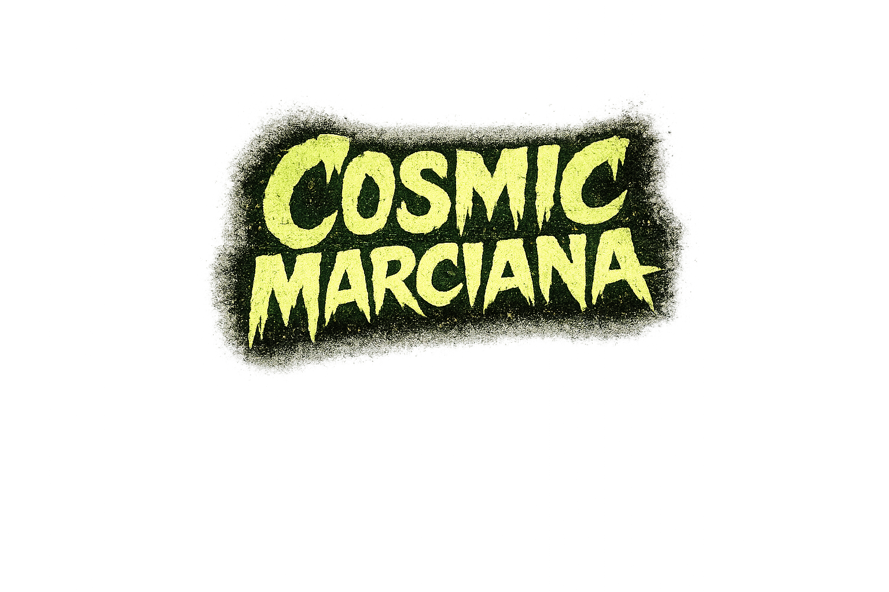

ruido psicoeléctrico desde Marte
pop electrónico, señales rotas y errores cósmicos
Te regalo mi música.
Si quieres apoyar para grabar vinilos y seguir haciendo ruido cósmico, puedes aportar algo 💚

💚 Bizum por DM
cosmicmarciana@gmail.com